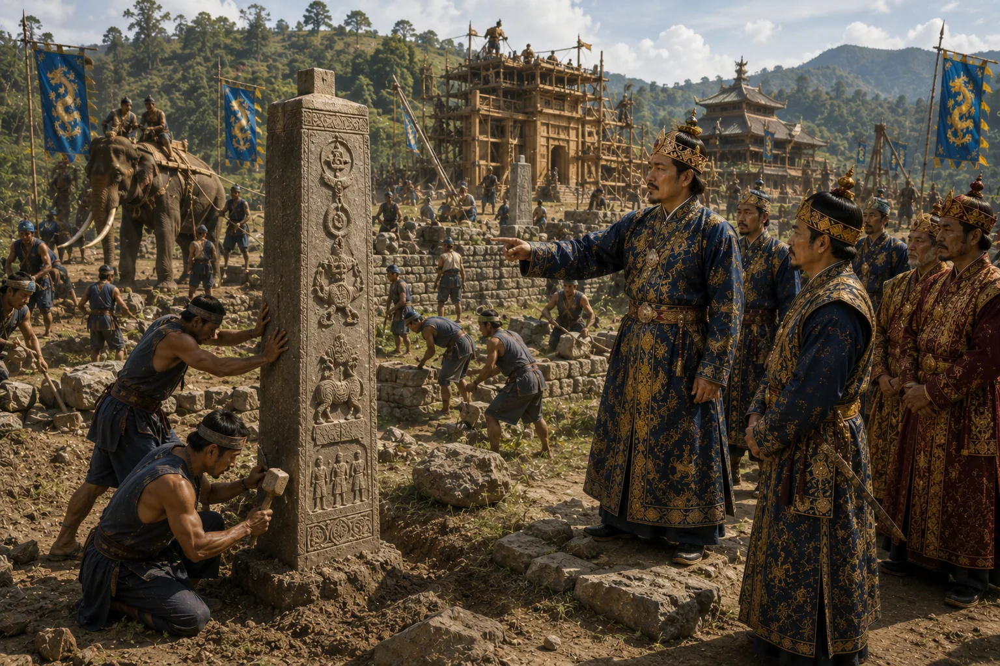

Erection of Charaideo Boundary Stones
c. 1470 · The coming of Sukaphaa

Inscribed stone monoliths erected around the holy hills of Charaideo to permanently safeguard the royal necropolis.
Sources have not yet been catalogued for this record.
People: Pratap Singha (Susenghphaa), Susenphaa
Open this scene in the interactive archive · Follow this event on MAP